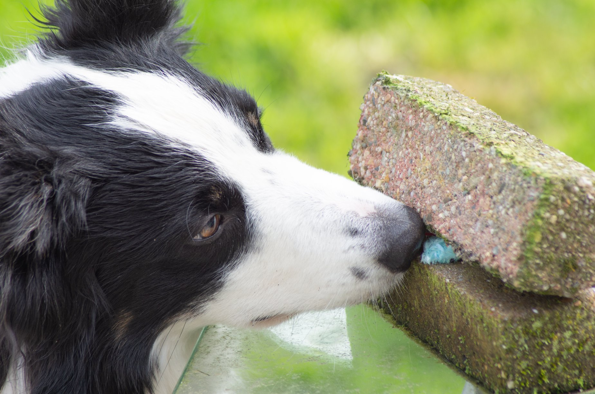

Welkom bij Hondenschool Ayronna
Sinds 2019 geef ik les in detectie- en speurwerk voor honden.
Dit houdt in dat we de hond leren een bepaalde geur te verwijzen. Dit kan vanalles zijn. In het werkveld worden honden bijvoorbeeld als explosieven- of narcoticahond getrained. Omdat dit trainingsmateriaal niet vrij beschikbaar is, en je er ook niet mee over straat wilt lopen, gebruik ik meer conventionele geuren, zoals vanille, kruidnagel of munt. In principe kun je de hond elke geur aanleren die je maar wilt. Wel is het belangrijk hierbij ook rekening te houden met de hond. Een geur als kaneel is heel sterk en wordt niet door elke hond gewaardeerd.
Ben je nieuwsgierig geworden? Kijk dan gerust verder rond op mijn site!